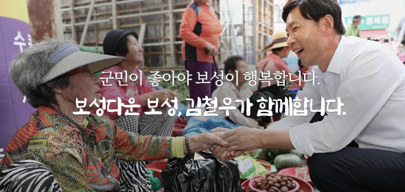
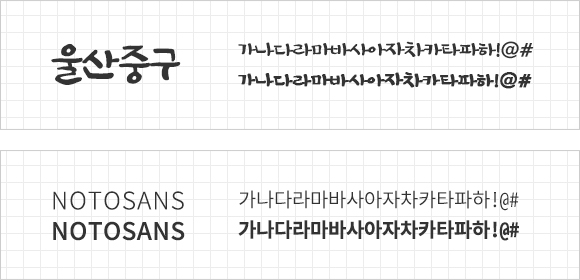

‘군민과 함께하는 열린 군수실’ 이라는 주제에 부합하는 이미지를 선택하고 소통 중심의 레이아웃 구성을 하였습니다. 또한 기존 홈페이지가 다소 딱딱한 느낌이 있었기 때문에 리뉴얼을 통해 쉽게 다가갈 수 있는 친근한 이미지를 주려고 노력하였고, 사용자의 홈페이지 이용이 편리하도록 UI&UX를 구성하였습니다.
녹차의 고장 보성의 떠오르는 이미지 녹색 계열의 컬러를 잘 살려줄 수 있는 색을 주색으로 작업하였고, 명랑·기쁨·희망을 상징하는 노란색을 포인트색으로 사용하였고 주색은 물론 녹색계열의 색과도 잘 어우러지는 색입니다. 보조색은 주색, 보조색과 잘 어울리는 파란색으로 맑고 깨끗한 보성의 호수와 바다를 표현하였습니다.
클라이언트의 요청사항에따라 시장상인과 악수하는 사진을 비쥬얼 이미지로 선택함으로써 군민소통에 부합하는 느낌을 주도록 하였습니다.

타이틀 서체는 납작한 느낌의 무게감과 안정감이 있는 울산중구 서체를 활용하였고,본문 서체는 명시성과 가독성이 좋은 본 고딕을 활용하여 깔끔한 느낌을 주고자 하였습니다.

군정 목표의 다양성을 표현하기 위해 메인 비쥬얼 영역 네모박스에 보성의 컨셉 컬러를 활용하였고, 군민과의 소통을 중요시 하는 군정 이미지에 맞게 비쥬얼 사진을 적용 시켰다.
추후 군정에 대한 사진과 영상을 많이 올릴 예정이므로 사진과 영상이 잘 보이는 곳에 배치되었으면 좋겠다는 클라이언트의 요구에 따라 작업. 사진은 슬라이드되게 작업
소통하는 열린 군정이라는 타이틀에 맞게 한 영역을 SNS로 구성하였고 주색을 배경 그라데이션으로 넣어 보는 사람으로 하여금 흥미로울 수 있게 작업하였다.